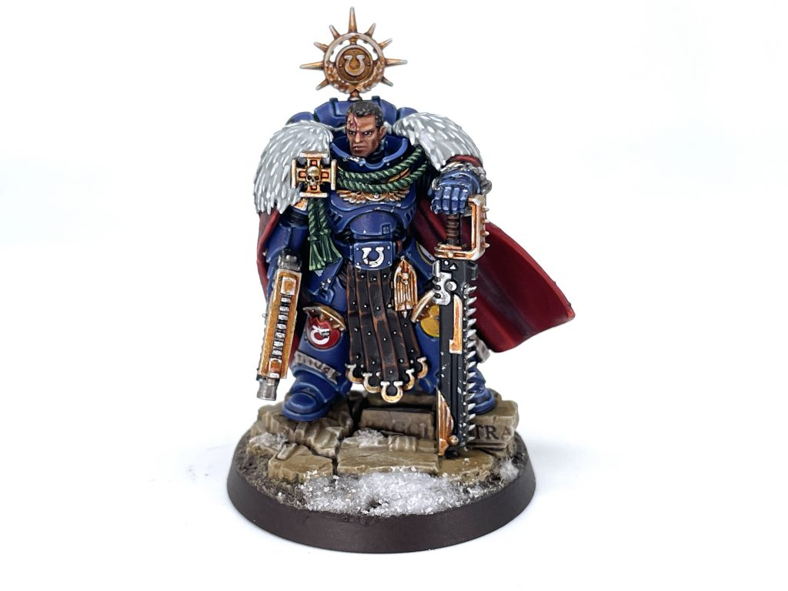
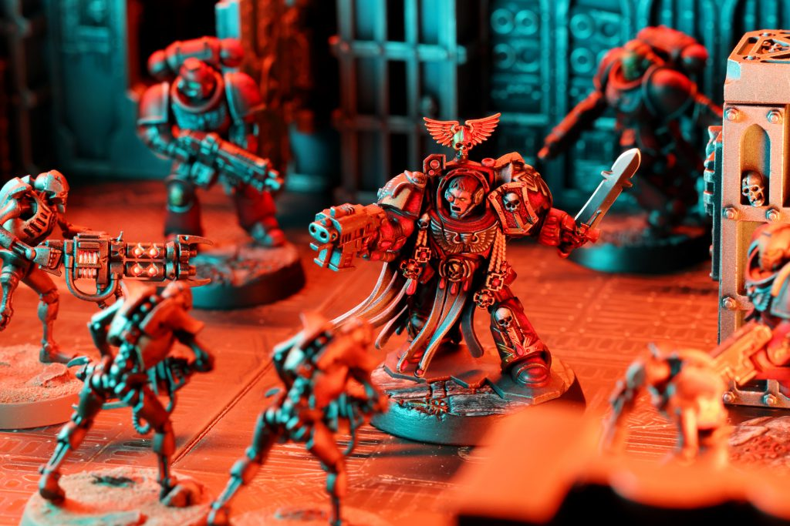
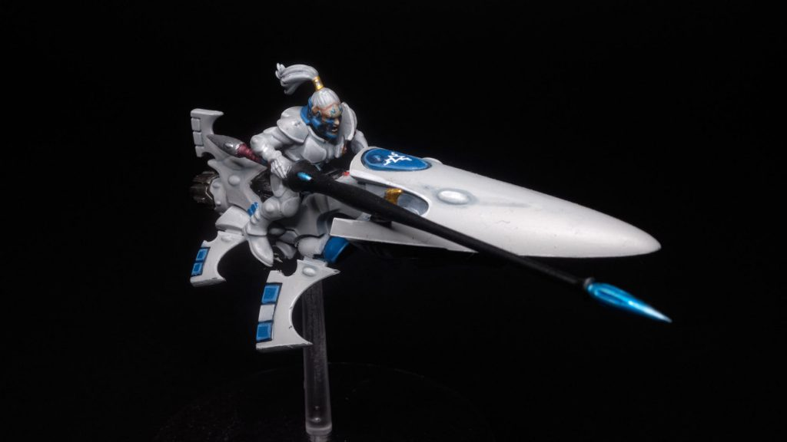
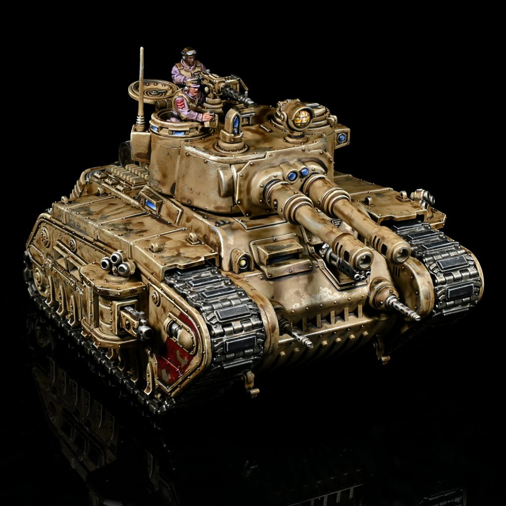
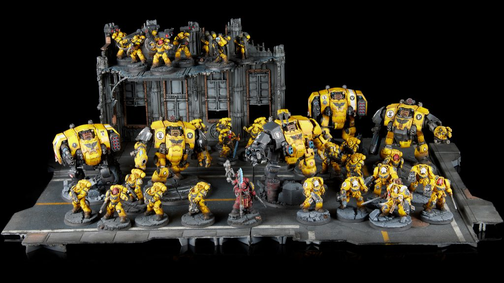
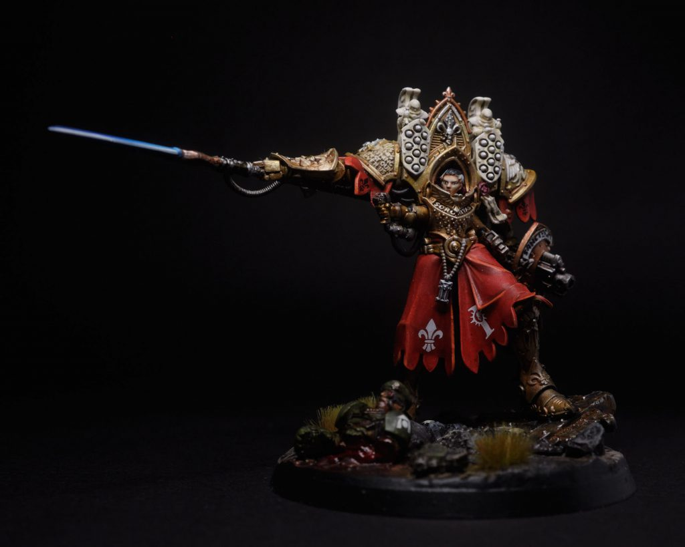
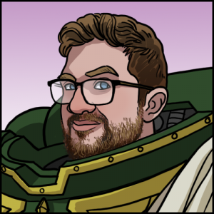

Tabletop Battles Reviews: Warhammer 40k 11th Edition
If you are new to Warhammer 40K - welcome! The start of a new Edition is one of the best times to get into the game - there’s an exciting launch box that gives you everything you need to jump right into two popular factions, and everyone is about to start learning together, seasoned veteran and newcomer alike. If you’ve played a lot of 10th, and this is your first Edition change, then buckle up - there are some big shakeups afoot that will change how the game plays, while holding onto the familiar core that you know and love. If you’ve seen a few of these go past, then this is firmly a medium-sized change - not a full overhaul like the start of 10th Edition was, but some really critical changes to core ways the game plays (especially around terrain and missions) that it’s going to be a bigger shift than 8th to 9th Edition was.
Today, we can talk to you about the contents of the Armageddon box, and some accompanying digital material that supports it. That means on the rules review side of the fence, we’ll be looking at:
- The Core Rulebook
- Extended Digital Rules that support this
- The Chapter Approved Mission pack
- The Chapter approved Mission layouts
Huge thanks to Games Workshop for providing us with review copies of all the material covered today. Please note that any digital material we refer to is subject to change until it is made available on Warhammer Community or the Warhammer 40k App.
Our Coverage - Breakdown
Before we get kicked off, it’s worth talking through what we’re going to be talking about today. We’re going to have the following for you:
- This article - an overview of the game, and our thoughts on the new Edition.
- Deep dives into each phase and section of the rules, focusing on what has changed.
- An overview of the Chapter Approved mission pack and layouts, followed by deep dives on each Force Disposition throughout the week.
- A review of the new official Terrain Area set that supports Chapter Approved layouts.
For returning veterans - the deep dives are for you. While 11th Edition isn’t a full reset of the game like 10th was, there’s a lot of change, especially in the Charge and Fight Phases plus Terrain rules, and you’ll need to absorb plenty of new interactions, and maybe unlearn a few old habits.
11th Edition Core Rules

Ultramarines Captain Titus. Credit: SRMOverview
Warhammer 40,000 is a science fiction miniature wargame that uses dice- and distance-based gameplay mechanics. Each player turns up to the game with an army of their models, which are arranged into units, sets them up on a battlefield, and then five Battle Rounds are played to determine the victor. In every Battle Round, each player takes one turn, in which they can move their models around the battlefield, unleash volleys of firepower, and charge them into brutal melee combat. Each player’s units primarily act during their own turn, but they’re not completely helpless during the opponent's turn. Many units can use special abilities or Stratagems to immediately react to their opponent’s actions, and in the Fight phase where melee combat is resolved, both players’ units get to attack.As the armies smash into one another, death and destruction will reign, and units will get obliterated and removed from play, but it’s not necessarily the last army standing that wins. As each player works through their turns, they will be attempting to achieve Primary and Secondary Missions to score victory points (VP). You obviously shouldn’t ignore your opponent’s army entirely in favour of these, as the more units you have alive the easier it usually is to achieve objectives, but sometimes a bold, heroic sacrifice to put big numbers on the scoreboard is a better strategy than methodical, grinding annihilation. You also need to pay attention to your opponent’s goals and try to thwart them, and one of the biggest new mechanics in 11th Edition is asymmetrical Primary Missions - each player will have different sets of goals on the table, some that overlap, and some that do not.
At the end of the battle, the player with the highest number of VP wins, even if their army has been completely annihilated. You shake hands, and then make your plans to do it all again, whether it be the next time you and your buddies can hang out, the next time your gaming club meets, or after just a short lunch break if you’re playing in a competitive tournament. Many of us here at Tabletop Battles have been doing just that week-in, week-out for years at this point, and while we love 10th Edition (our general staff consensus is that it’s the best the game has ever been), we’re hyped for a new edition to shake the game up and keep things fresh.
A Turn of Warhammer

Blood Angels and Necrons in Boarding Actions. Credit: PendulinEach turn in a game of Warhammer is split into five phases, plus steps at the start and end where you resolve some rules and abilities. Throughout the game, you will be attempting to achieve Primary Missions that are determined at the start of it, which will give you instructions for how you can score points on each of your turns. By acting in each of the five phases, you can work towards these goals, plus Secondary Missions that change turn-to-turn.
During battle, there is always one player who is the Active Player and one who is the Opposing Player. While some rules or actions can temporarily switch these around, the default is that the Active Player is the one whose turn it is, and when we talk about Active or Opposing players later in this article, this is what we mean.
For returning players - 11th Edition uses the same set of phases as in 10th, so the turn structure will be familiar, but every phase has changes in it, so make sure to follow the links in each section below to the deep dive articles.
Command Phase
The Command Phase is essentially where you prepare for the rest of your turn, establishing the lay of the land and executing effects that happen before your units can act.In it, you:
- Receive new Secondary Missions
- Refresh your supply of Command Points
- Check whether your damaged units suffer Battle-shock as their morale crumbles
- Activate some special abilities and Stratagems.
- Score some categories of Primary Mission.
Command Points (1CP) are a resource that allow you to activate Stratagems. These are powerful special effects that can be triggered to turn the tide of battle, whether by boosting your damage on a key attack, protecting your precious units at a crucial moment, or securing areas of the battlefield under your control. There is a set of Core Stratagems that every army has access to, and when building your army you will also select one or more Detachments, sets of additional rules you can use in the game that will include more Stratagems providing unique abilities.
Most Stratagems cost 1CP to activate (outside a few powerful ones that cost 2CP), and both players receive 1CP in each turn, which means you will almost always have some gas in the tank with which to respond to your opponent’s plans. The Command Phase is also when some Stratagems are activated, such as those that provide turn-long buffs, or interact with Missions or Battle-shock.
You can find out more about Stratagems in the Deep Dive below:
Battle-shock is the last key element of the Command Phase. If your units suffer enough damage that they are at half their Starting Strength or below, or if they have already had their morale crushed by abilities or Stratagems from the opponent’s repertoire, they will need to take a Battle-shock test to determine whether they hold it together this turn. Units that fail Battle-shock cannot hold Objectives, perform Actions that are critical to Secondary Objectives, and cannot be targeted by Stratagems, so failing Battle-shock can undo your scoring plans, and leave your units vulnerable or ineffective at a critical moment.Movement Phase

Credit: Keewa In the Movement phase, the player whose turn it is moves their units around the table. Each unit has a Movement Characteristic that determines how far they travel during a Normal Move, after which they can still act normally in the rest of the turn. Units can sacrifice some of their future options to either pick up a speed boost by Advancing, or flee from a doomed close combat by Falling Back. Units can also Remain Stationary if they are already in position.Units don’t always have to rely on their basic Movement to get them around the table. Many armies can field Transports, Vehicles (or in some cases terrifying bio-engine Monsters) that can carry smaller units around the table, and in the Movement Phase units can either Embark into Transports, or Disembark to join the fray. Other units can arrive on the battlefield using Ingress Moves, either walking on from the edge of the Battlefield after lying in wait in Strategic Reserves, or appearing in the midst of combat using teleportation, jump packs, or a whole host of other tricks that are grouped under the Deep Strike special ability.
During the Movement Phase, the focus is on the Active Player whose turn it currently is, but the Opposing Player still has some opportunities to interact. Many abilities or Stratagems allow a unit to make a small move (commonly known as a reactive move) when an enemy unit draws close, perhaps letting them dive behind cover, or dance out of range of a potential charge. In addition, at the end of the phase, the Opposing Player gets a chance to activate two key Stratagems: Rapid Ingress, which lets them deploy one of their own units from Deep Strike or Reserves, and Overwatch, letting a unit unleash a desperate volley of shots to try and thwart the Active Player’s plans. Once that’s resolved, the violence really starts in earnest.
Shooting Phase

Rogal Dorn. Credit: Rockfish In the Shooting phase, the Active Player gets to unleash the firepower of any of their units that are Eligible to Shoot, which generally means any that either Remained Stationary or made a Normal Move (and in most cases, are not engaged in a melee). Many special abilities or Stratagems can also provide the option to Shoot after Advancing or Falling Back.When a unit shoots, you pick a visible target in range of each of its weapons, and resolve shooting attacks from them. Weapons have offensive characteristics like Ballistic Skill (accuracy), number of attacks, Strength and Armour Penetration (AP) that determine how deadly they are, while enemy units have Toughness, Armour Saves and Wounds characteristics that determine how hard they are to kill. Resolving an attack requires a series of rolls to determine whether an attack hits the target, whether its Strength overcomes the target’s Toughness, and whether the target’s Armour Save holds up against the AP of the incoming attack. A successful attack that pierces the enemy’s armour deals them Damage, and if that results in them running out of Wounds, they are destroyed and removed from the battlefield.
Attacks are resolved in batches with identical characteristics, and since many units have fairly uniform equipment, you can quickly work through large numbers of attacks by resolving them all at once. In fact, one of the big innovations in 11th Edition is that the process of making saves and allocating damage has been streamlined so that batch execution of attacks is now fully supported by default, whereas (for newcomers) in previous Editions it was technically a shorthand for doing them one at a time (even if everyone always did it in batches).
When resolving attacks, many weapons or units have Core Abilities that can increase their lethality, or protect them from incoming fire. These include effects like Sustained Hits, which add additional dice to the pool on a Critical Hit (6 to hit), Anti- weapons which are especially effective against certain targets, and Stealth, which makes a target harder to hit.
You can find out more about the suite of Core Abilities in 11th Edition in the Deep Dive below.
As well as their armour and special abilities, units can protect themselves from oncoming firepower by using the Terrain on the Battlefield. Areas of Terrain can prevent units behind them being Visible to foes, preventing them from getting shot, and units that are only partially Visible may benefit from Cover, reducing the accuracy of incoming firepower. Lighter units like Infantry can also use the new Hidden and Go to Ground rules to secrete themselves in areas of terrain, preventing themselves from being shot at unless the enemy moves into close range.You can find out more about how Terrain interacts with the Shooting Phase in the Deep Dive below.
Through a mixture of their resilience, tricks, and cunning use of terrain, most armies in Warhammer 40K can survive the opponents Shooting phase with many of their assets still intact. To press the issue, the game now moves to the Charge Phase, where units close into melee range, ready to settle things with knives, choppas and chainswords.Charge Phase
 Genestealers. Credit: Pendulin
In the Charge Phase, the Active Player’s eligible units can make a Charge Roll, which determines their Charge Range for the turn. If this is enough to reach one or more nearby enemy units, they can be moved into Engagement with one of these targets, and in the subsequent Fight Phase they’ll get to make melee attacks. Successfully Charging provides units with a Charge Bonus, which means they Fight First in the following Fight Phase, allowing them to carve through the enemy’s forces before they get a chance to retaliate. Charging is primarily used to set up favourable melee engagements, but it can also sometimes be used to either squeeze extra movement out of a friendly unit, or pin down an opponent unit in a subsequent turn. Units that start the Movement Phase in Engagement can only stay in the Fight or Fall Back, which significantly reduces their options and capabilities, so smashing a spare unit into them can be tactically valuable, even if it doesn’t do very much damage.
Genestealers. Credit: Pendulin
In the Charge Phase, the Active Player’s eligible units can make a Charge Roll, which determines their Charge Range for the turn. If this is enough to reach one or more nearby enemy units, they can be moved into Engagement with one of these targets, and in the subsequent Fight Phase they’ll get to make melee attacks. Successfully Charging provides units with a Charge Bonus, which means they Fight First in the following Fight Phase, allowing them to carve through the enemy’s forces before they get a chance to retaliate. Charging is primarily used to set up favourable melee engagements, but it can also sometimes be used to either squeeze extra movement out of a friendly unit, or pin down an opponent unit in a subsequent turn. Units that start the Movement Phase in Engagement can only stay in the Fight or Fall Back, which significantly reduces their options and capabilities, so smashing a spare unit into them can be tactically valuable, even if it doesn’t do very much damage.Similar to the Shooting Phase, at the end of the Charge Phase the Opposing Player gets a chance to intervene, optionally using the Heroic Intervention Stratagem to launch a counter-charge into an over-aggressive foe, or if they pay extra CP, launch a surprise attack on an enemy that was trying to stay out of trouble. After all Charges from both sides are resolved, things move on to the final phase of the turn, where units Fight!
Fight Phase
 Credit: Robert "TheChirurgeon" Jones
The Fight Phase is when melee combat is resolved. The 41st millennium features many brutal guns, but if anything the melee weapons are even more vicious, with almost every faction sporting some signature toys that they unleash when things get close and personal, and some factions do the majority of their damage in this phase. As well as eliminating the opposition, the Fight Phase can also provide a crucial final opportunity to reposition models in and units in a turn, and victory in the Fight Phase can provide a vital opportunity to seize Objectives.
Credit: Robert "TheChirurgeon" Jones
The Fight Phase is when melee combat is resolved. The 41st millennium features many brutal guns, but if anything the melee weapons are even more vicious, with almost every faction sporting some signature toys that they unleash when things get close and personal, and some factions do the majority of their damage in this phase. As well as eliminating the opposition, the Fight Phase can also provide a crucial final opportunity to reposition models in and units in a turn, and victory in the Fight Phase can provide a vital opportunity to seize Objectives.The Fight Phase proceeds in three main steps. First up, units Pile In - starting with the Active Player, all units that are engaged or charged get to make a short move to try and ensure as many of their models as possible get to participate in the bloodbath. Unlike in previous Editions, all eligible units do this at the start of the phase, rather than each time a unit Fights, so this provides a key opportunity to set the stage for what comes next. The exception to this is that units who get dragged into battle later in the phase, or those which had charged and find themselves without a target, get to make an Overrun pile-in at that point, letting them make an extra move to reach the foe.
Once this is done, players take turns having a unit Fight, starting with all units that have Fights First, either because they Charged or because they have it as a Core Ability. Fighting works pretty much the same as shooting, but you can obviously only target foes that you’re within melee range of, which is referred to as Engagement Range in 40k.
Once everyone has had a chance to Fight, each unit that did so gets to Consolidate. If they’re still engaged with the foe, the units slam closer together over the bodies of the fallen to ensure that the next turn’s combat is just as brutal. If a unit has wiped out its current opponent, it can press onwards towards other nearby foes (potentially triggering more Fights), or if it’s now alone it can make a tactical move towards a nearby objective, just in time to score valuable VP from any missions that score at the end of the turn.
That, indeed, is what happens after the Fight Phase is complete - the turn ends and it’s time for the opponent to take theirs. Hopefully you’ve done enough damage, and perhaps positioned your units in sufficiently clever positions, that you can sustain their counterattack!
Armies and Units

Jack's 2000 point Imperial Fists army on his display board from the Tacoma Open 2023.Obviously, to fight a battle in Warhammer 40K, you need an army, and rules to go with them. The Armageddon box set contains two forces and a set of cards that provide the Datasheets that contain the rules for all the units, so you can try out a battle straight away.
Once you start building out an army, you’ll need access to a Codex for them. Codexes contain the full rules for all the units in an army, plus Army Rules and Detachments that provide you with additional abilities, stratagems, and upgrades that you can apply to your units. At the start of 11th Edition, existing Codexes from 10th Edition will still be valid (with a few errata to bring the rules up to date), but over the next few years these will gradually be replaced with 11th Edition ones (usually starting with the armies in the launch box, so Space Marines and Orks will probably be first).
Purchasing a Codex provides you with access to all the rules for the army in the Warhammer 40K App in addition to the physical book, and most armies also have some additional digital rules that are released via the App and the Warhammer Community Website. In the next few weeks, every army is going to get a release of new digital rules to kick-start them into 11th Edition, so even if you don’t own any Codexes yet, watch out for that to get a flavour of what they can equip them with.
As you explore a Codex, you’ll find that the 41st millennium has all sorts of different types of units available, and many of these have special rules for how they work on the battlefield. Brave heroes can be Leaders that attach to other units and boost their capabilities, mighty Vehicles and Monsters lumber across the battlefield dealing death, and Aircraft swoop by performing strafing runs. The Core Rules outlines how each of these work, and you can find out more about some of these in our deep dive below:
11th Edition - Impact
We’ve had some time to digest 11th Edition, and to us there are three main things that stand out about it, both as a wargame in general and in comparison to previous editions.11th Edition is Clean

Credit: KeewaThis is the cleanest, clearest set of Core Rules that Warhammer 40,000 has ever had, and the first that really feels like they’re ready for the digital age. The way the rules are presented is clear and unambiguous at every step, particularly when it comes to identifying eligibility to use a rule and trigger conditions. The rules are also numbered for the first time, which makes cross-references between different parts of the book easy to follow, and makes targeting any digital changes or errata easier.
Cleaner rules have an immediate benefit when it comes to learning and playing the game, but the better support for future releases, both in Codexes and digital, will be where they really pay off. 10th Edition saw an explosion in the volume of digital rules content that was released, and we loved it, but there was always the risk of a rule being written slightly differently in a digital detachment causing weird edge cases, and that should largely be banished now. No more reading every single Surge Move ability to see if this one creates a loophole - now they’re just a Surge Move.
The team also clearly intends to be proactive about evolving the rules to improve the game, where justified. Accompanying the physical rules release, there’s a digital version of the rules available in the Warhammer 40K App, and a small number of advanced rules that exist only in here, which makes them easier to edit or tune over time without invalidating people’s rulebooks. Setting up the framework to do this now should pay off in spades over the next few years.
11th Edition is Fast
 Blade Champion. Credit: Pendulin
Blade Champion. Credit: PendulinOne of the challenges with an army-scale wargame like Warhammer 40K is that games can take a while to play out. At the Strike Force scale, which is the default game size most players enjoy, a game can take between 2-4 hours, which is a real investment of time, and a particular challenge for competitive events. Most of these allow between 2.5 and 3 hours for a game, and at the lower end of this you have to be really strict on time, while anything above the upper end starts to stretch the logistics of what will fit into a weekend with time to eat and sleep (the flesh is weak, after all). Everyone would benefit if games could more reliably slot into the 2-2.5 hours, and 11th Edition has a good go at making that happen.
Many aspects of the rules have clearly been reviewed with an eye towards speeding them up. Standouts include attack resolution (“Fast Dice” is finally fully supported, rejoice) and the shared Pile-in/Consolidation steps, but there are more subtle choices at play too. Moving Overwatch and Heroic Intervention to the end of their respective phases removes the need to continuously pause and check for an opponent’s potential reaction, which will improve the game’s flow, while the new rules around Charging and Engagement range require less fiddly and precise model positioning than their previous incarnations.
There’s no one thing to point to that will definitely shave 10 minutes off every game, but a lot of smaller choices that, in the aggregate, will accelerate play without sacrificing the feel of the game. This will be further supported by the last big point, which is that…
11th Edition is Brutal
 Rogal Dorn Tank Commander. Credit: SRM
Rogal Dorn Tank Commander. Credit: SRM11th Edition’s terrain rules and mission design, plus some of the changes to movement and positioning, are going to make this an especially brutal edition of Warhammer 40k. Holding objectives is now a much riskier activity, as it often makes you vulnerable to ranged attacks, and it’s much harder to use walls and ruins to protect yourself from larger foes charging and eviscerating you. New rules like Hidden offset this a little, but the way foes play around that is to move in close, further ratcheting up the violence.
The missions amplify this further. Many Primary Missions have end-of-turn scoring conditions that may read as a little easy to 10th Edition audiences, but they almost always require you to move onto objectives (often the central objective), putting your units firmly in harm’s way. There’s reward as well as risk - big scoring turns early on are much more feasible, so there’s further encouragement to sometimes throw caution to the wind and get stuck in.
In combination with the improvements to the speed of gameplay, this is going to create some quick and violent encounters when armies clash, and one of the big adjustments for existing players is going to be re-learning how to ration out resources to stay on the table for the whole game.
Why Play Warhammer 40K?
If you’ve read all that as a prospective player, you may now be trying to figure out if Warhammer 40,000 is the wargame for you. What makes it stand out compared to other games on the market. For us, the answer is obviously “lots of things”, but here are three key ones we’ll pull out.40K Lets You Field an Army
40K is a wargame where armies clash, not just skirmishing warbands of five to ten fighters on each side. We love those games too (you can find plenty of content about them across our website), but the army-scale setup that Warhammer 40K offers creates a very different feel. We’ve talked a lot in this review about the focus on the pace of play, and those are in service to make this a game where you can drop a hundred infantry and half a dozen tanks onto the table, and still play out a game in 2-3 hours. This provides a sense of scale that not all games can muster, and creates lots of depth in assembling your force from both a gaming and hobby perspective.40K Has Enormous Variety
Warhammer 40K has decades of accumulated lore underpinning its setting, and a hugely varied set of factions to choose from. Armies from these different factions can look totally different from one another, but the game system manages to support them all, and creates engaging conflicts when they meet. One day, that army of infantry and tanks might find themselves confronted by just five towering robots, while on another it could be a coterie of murderous elf clowns riding on jetbikes and skimmers. There’s something for everyone here, and always a new angle you can explore even if you’ve been in the hobby for years.40K Is Vibrant
Warhammer 40K 10th Edition was the best the game had ever been, and that’s been reflected in a staggering growth in the number of people playing it and attending tournaments. It’s also set a new standard for the level of ongoing rules support and releases that have been made available digitally (usually for free), keeping things fresh and evolving. If you want to participate in the competitive side of the hobby, there are events all over the world that range in size from tens of players to over a thousand. If you want to get a game in at your local club every few months, there will be new surprises and toys to try out each time. The new edition also does its level best to create a single set of rules that will satisfy both hardcore and more relaxed players, creating a huge pool of potential foes (and also, hopefully, friends) that you can challenge wherever wargames are played. No other miniatures game has a scene quite like Warhammer 40K’s, and Games Workshop is extremely active in trying to build it up even further.11th Edition - Our Impressions
Is 11th Edition Warhammer 40,000 good? Our team weighs in.James “One_Wing” Grover
 I am largely very positive on 11th Edition, albeit with a few notes of caution and things to watch over the first few months.
I am largely very positive on 11th Edition, albeit with a few notes of caution and things to watch over the first few months.I wrote most of this article, so you can probably tell already what I like - this is the cleanest and best written set of Core Rules that the Warhammer studio has ever produced, which sets an extremely good foundation for the edition. The changes to phase-to-phase gameplay all feel fantastic on the table as well, smoothing out a bunch of rough edges from 10th Edition, and getting you to the action faster without sacrificing player agency. Really good stuff on this front, top marks.
I’m also a big fan of the goals and parts of the execution of the Terrain and Mission changes, but with a bit more caution on some of the specifics. Terrain Objectives are a great way of making a battle feel more vivid and real, and the asymmetric mission concept is pretty exciting. I am a firm believer in the goal of making missions that are satisfying for both the competitive crowd and more casual/narrative players, because I think it’s better for the growth and community of 40K if everyone is playing the same game, and this is probably the best attempt at that we’ve seen. Terrain objective areas in particular take a swing at breaking down the barriers between the types of terrain often seen on competitive tables vs. narrative, and should create more immersive gameplay.
My two biggest concerns are whether terrain objectives (particularly with the specific set of terrain areas and layouts provided) make the game too brutal, and how well the balance and complexity will hold up between the different Force Dispositions that determine missions.
On the first point, the need to use some of the larger terrain pieces as objectives on most maps provides relatively limited tools to cut off firing lanes, and way too many of the maps for my liking (it’s >50%) have a gigantic central terrain area. Couple that with the fact that models can now see through terrain they’re partially within, and once a large model tags the centre a lot of the board is open to their firepower. This is a place where Hidden definitely can theoretically help a lot, but many of the layouts are sufficiently tight in the centre that a model in this position will frequently have 15” range to parts of the expansion objectives as well. I will say that the discovery of the Go to Ground rule in the extended digital rules (see our Terrain Deep Dive), which wasn’t included in previews of Hidden, has given me a bit of re-assurance here. Changing the Hidden range from 15” to 12” may not sound like much, but on the maps it creates a critical difference in where it is and isn’t possible to shoot from objective to objective, which could hold things together.
On mission design, there’s a few matchups that seem a little eyebrow raising on first read, but with fifteen combinations and no data to work I’m willing to wait and see on whether there are any major issues - inevitably a few will creep out towards the 55:45 range, and that would be absolutely fine for the first set in this style, but if a few hit 60:40 or more I expect to see some tinkering. My bigger concern early on is actually the significant gap in complexity between different Dispositions, with the Disruption and Recon set (and some Priority Assets options) generally needing quite a bit more mental bandwidth to handle than Take and Hold or Purge the Foe, which also tend to clash less with the demands of the Secondary cards.
Obviously you can try and adapt your Detachment selection to provide a set of missions you enjoy, but if your favourite Detachment is 3DP in the new system you don’t get a choice, which I think might rub some parts of the playerbase the wrong way. I also think some occasional competitive players are going to be very hesitant to change Dispositions once they’ve learnt one set, which can negatively impact their willingness to learn a new detachment. Unless you have lots of time to practice, changing your Disposition for an event means that you will be learning a whole new mission pack as you play, but opponents who have not done so will still be playing missions they’ve previously practiced, which could be a pretty significant disadvantage. If I had to pick one thing that I don’t think will survive fully intact it’s probably this - there are a bunch of second-order effects of the way that Dispositions work that will accumulate to some negative impacts in practice.
None of that is to say I don’t like the changes to Terrain and Missions - in both cases I think there are substantial risks being taken, but they’re in service of good goals, and the start of a new edition is the right time to try big, bold changes, and there’s already evidence of a willingness to make some targeted improvements such as the Go to Ground rule. For my money, 10th is the most I’ve enjoyed an edition of Warhammer 40K up till now, but I would definitely put “repetitive missions” near the top of my structural critiques of it. That means I’m excited to find out how this completely novel set works out in practice once thousands of players have access to it instead of a few of us getting in hurried experimental games and rotating things in our mind palaces.
So, in summary - yes, I’m hyped for 11th Edition. The Core Rules are the best set that’s ever been produced, and it uses the stability of that foundation to make a much bolder swing at redefining how missions work than has been tried previously. I am intensely excited to monitor the situation from the Competitive Innovations panopticon once tournaments get kicked off, and can’t wait to see what the community comes up with.
Curie

Hey there - Jeremy aka Curie here. For those that are new to the hobby or haven’t heard of me I help write for Tabletop Battles while also running Stat Check, a source for competitive statistics and analysis. I don’t have much to say that Wings hasn’t already, but there are a few things I’ve picked up on, starting with the rules writing itself. I know Wings already said this, but this is a very cleanly written edition in terms of the core rules. Many of the changes represent significant quality of life improvements for ease and speed of play, while others remove some edge cases that always felt a little weird when playing.Returning players are encouraged to study the changes to Making Attacks as well as to the Fight Phase - this is where the biggest impacts will be seen I’ve found. The introduction of Hidden, the change to the Benefit of Cover, and the ability for armies to manipulate Detection Range all play a very big role in tweaking the Shooting Phase to something new and interesting as compared to its current state. The key changes to how attacks are resolved (all at once per profile, saves all at once by allocation group, removing lowest value dice first) both greatly speed up the resolution of attacks while also removing some of those odd interactions like characters tanking shots when they weren’t intended to.
The changes to the Fight Phase are going to heavily reward pre-planning your Pile-Ins while making charges, and the changes to Fights First make this attribute much less punishing to interact with.
Overall I’m thrilled with the changes to the core rules, albeit not without with a couple concerns around how “open” the new tables have felt (the change to visibility rules heavily impacted this) and to the impact the new mission & force disposition combinations will have on each individual army. That being said, the bones of this edition are the most sturdy and resilient I’ve seen yet, so kudos to the rules team at Games Workshop for their hard work bringing this to us.
Liam “Corrode” Royle
 Coming from earlier editions, opening the 11th Edition Core Rules for the first time gives a strong first impression. James is right to emphasise how clean they are; they’re laid out really well and the numerical references make it far, far easier to be specific about any particular point you’re trying to make. There were numerous occasions in our discussions as we worked on review content where someone would ask a question, and the reply would be something like “oh that’s in 20.02”, which doesn’t sound like much but is a huge quality of life improvement in trying to quickly signpost where rules are. We liked this in AoS 3rd edition too, so it’s nice to see it finally make it to 40k.
Coming from earlier editions, opening the 11th Edition Core Rules for the first time gives a strong first impression. James is right to emphasise how clean they are; they’re laid out really well and the numerical references make it far, far easier to be specific about any particular point you’re trying to make. There were numerous occasions in our discussions as we worked on review content where someone would ask a question, and the reply would be something like “oh that’s in 20.02”, which doesn’t sound like much but is a huge quality of life improvement in trying to quickly signpost where rules are. We liked this in AoS 3rd edition too, so it’s nice to see it finally make it to 40k.There has also been a lot of clean-up of things like when, exactly, the start and end of phases, turns, and battle rounds are, and adoption of terminology that is common within the community but wasn’t previously defined; you’ll see references to ‘expansion objectives’ in the missions for example, which means the ones in no-man’s-land that are not the central ones, though ‘uppy-downy’ still hasn’t been canonised for some reason.
The vast majority of changes to how things work at the core rules level are ones I am very positive on. After a full edition of FLY feeling like an impediment (and sometimes creating baffling situations like trying to understand how Deffkoptas and the ‘must move in a straight line’ rule in the Speedwaaagh! detachment interacted with terrain), a nice balance has been struck to simplify using it without going back to the version in old editions which made terrain irrelevant. The big changes around the Fight phase will help to speed it up tremendously, and Fights First becomes far less back-breaking for melee armies to play around. There’s a lot to like here and I think for most people coming from 10th edition they will pick this up, read it once, and nod their heads with satisfaction at seeing bugbears and wrinkles from 10th ironed out.
Like the others, I have concerns around the play pattern that the combination of the missions and the terrain rules creates. Terrain objectives is cool and narrative, and makes much more sense from a game-feel perspective than ‘no, idiot, you want to stand on the arbitrary circle but not in the ruin’ but has the potential to make games extremely bloody. The concept around dispositions and asymmetric primaries is all very clever, but I think throws up a whole host of potential problems - Purge the Foe and Take and Hold feel like much more straightforward dispositions than the others, and I think many players will favour arranging their lists so that they can play one of these two, and that will lead to some very samey games if you end up playing against the same disposition 3-5 times across the course of a single tournament. In one of our practice games James and I played Battlefield Dominance, the Take and Hold mirror match, which is basically just Linchpin from 10th edition. Would your ideal tournament be to play Linchpin for 60-100% of your games at every event?
By contrast, the primaries from the other dispositions range between “interesting” and “mindboggling.” Warhammer Community previewed the Extract Relic/Locate and Deny mission you get from the pairing of Priority Assets and Disruption, and the reactions I saw generally mirrored the reaction I had when I first looked at the cards - how the hell does this work? Once you carefully read both cards you can see the play pattern that’s expected to come out of it, and it does seem like it could create some interesting games, but it’s a lot to try and work out on a first go and obviously more complex than anything in Take and Hold or Purge the Foe. I remain unconvinced that all five dispositions are going to be balanced with each other, though we’ll see how that works out in practice.
The good news is that this stuff isn’t fatal to the edition. Mission packs change, and I think the last set of missions in 10th edition is a qualitative improvement on the first set as lessons were learned. Inevitably we’ll have another round of Chapter Approved this time next year with tweaks to how the game plays, and if it really isn’t working there’s lots of scope to change things up - or it may turn out we’re just all too bearish on it and the system has worked brilliantly, in which case we’ll be sure to mention it in a retrospective.
TheChirurgeon
I’m always at odds when it comes to reviewing a new edition of Warhammer 40k. The question always keeps popping up in my head: “Who is a review for?” Because ultimately, if you’re playing 40k at all in six months, you’re going to be playing this edition, with these rules. So whether they’re good or bad is kind of beside the point. You’re going to play this, or you’re going to go play StarCraft or Trench Crusade or play video games or go outside and play pickleball or ride a bike.
For the rest of us shut-ins, 11th edition continues a positive trend for the game overall, which is toward making more streamlined rules with a better layout, aside from the inexplicable decision to just leave a third of the rules in the app. Solutions like how they’ve handled FLY are elegant and sensible, and help solve a number of key problems with the game. I particularly like the numbering on the rules, which makes it substantially easier to find the rules you’re looking for, and the changes to Stratagems, Fight First, and Transports are all things I’m excited to play with. This edition feels like it has less bullshit.
I have my concerns. The big ones are the missions and the terrain rules. People looked at the terrain layouts for 11th edition early on and wrote the game off as a melee edition; this was because they lacked the context of the visibility rules. When you factor in the new rules for seeing out of terrain - units can see through terrain as soon as they touch it - the boards suddenly feel much more open, particularly if they lean on a large central square ruin. This in turn makes the game feel much more deadly, particularly when you now have to be visible on an objective in order to hold it. I haven’t played a test game yet that went meaningfully beyond the third battle round.
Which isn’t to say that they can’t - I’m sure there will be some adaptation period where players become more accustomed to the new system and things slow down a bit. But I’m not convinced that new players or players who don’t regularly play at events will get there, particularly with certain armies. When tenth edition released it was accompanied by a reduction in lethality for a number of guns and weapons; over the last three years that lethality has ramped up considerably and we’re preserving it going into the new edition. Would re-indexing again after three years have been too much? Absolutely. Would we have a better game if they’d done that? Probably.
Detachments are another area I’m not sold - I remain firm in my stance that tenth edition detachments moving away from proper subfactions was a mistake, and that was only calcified when we started seeing “Bloodless Angels” in the mix in the middle of the edition. I think moving to even more modular systems which take away the cool flavor of things like Traitor Legions and Guard Regiments lose something. I’m not a “Warp Talons” player, I’m a Night Lords player; I want good rules for the Night Lords, not to be told that I can run my Night Lords with lots of tanks if I want to.
The missions are the other mixed bag, and the hardest part to evaluate - with 15 different options and a promised 45 layouts, it’s difficult to evaluate just how these are going to play. I am fairly confident that they won’t be balanced. Not because GW don’t have capable designers but because the reality of balancing that many different mission scenarios and layouts makes doing so a logistical nightmare. It’s more likely that problems with the missions will be discovered and fixed in the first six months as players put their hands on the game and actually play it. And while I share James’ enthusiasm for more dynamic missions, I’m concerned about how real that’s going to feel if I’m playing Purge the Foe every game - while the details may change, at the end of the day my mission is still largely “kill a thing, hold an objective” every round.
But there’s the other rub: 10th Edition was kind of a dumpster fire at launch. The game balance was wildly off, there were a number of things which just didn’t work, and it was clear that half of the game’s datasheets and army rules had been cobbled together quickly by a team who may not have originally planned on re-indexing the whole game. But even at the time, we liked the game’s overall framework and Games Workshop’s regular cycle of balance and rules updates did a fine job helping them ensure that the game’s biggest issues were cleaned up within a year’s time. I suspect that whatever glaring warts 11th shows us will be similarly fixed within a year, and they’ll continue to tinker with and fix balance problems as they go.
Is 11th edition better than 10th? Probably. The rules framework just feels better - they’ve done a great job improving on the bones year after year. But even if it’s not right now, I’m confident that it will be in a year’s time.
Wrap Up
That’s it for our main review, but we've got masses more for you to dig into, both today and for the rest of the week as we really sink our teeth into 11th Edition.Have any questions or feedback? Drop us a note in the comments below or email us at contact@tabletopbattles.com. Want articles like this linked in your inbox every Monday morning? Sign up for our newsletter. And don’t forget that you can support us on Patreon for backer rewards like early video content, Administratum access, an ad-free experience on our website and more.
Originally published on Goonhammer.


Leave a Comment